Festiwal Miejskiego Szkicowania w Tarnowie 30 lipca - 2 sierpnia 2026
Polski biegun ciepła, renesansowa starówka, drewniane kościółki, wielokulturowe dziedzictwo, grobowiec Bema i szkice Wyspiańskiego – Tarnów to miasto stworzone do urban sketchingu. Piękne zabytki, podcienia chroniące przed każdą pogodą, przytulne kawiarnie i układ ulic, dzięki któremu wszędzie dojdziesz pieszo. Historia jest tu dosłownie na wyciągnięcie ręki. Dlatego właśnie tam organizujemy czwarty Festiwal Miejskiego Szkicowania. Zapiszcie w kalendarzach: 30 lipca – 2 sierpnia 2026. Do zobaczenia w Małopolsce!
Program Festiwalu
Poniżej znajdziecie festiwalowy informator do pobrania w wersji pdf, a w nim:
- szczegółowy harmonogram Festiwalu,
- dokładne opisy warsztatów, pokazów i prelekcji.
Wszystkie punkty programu oznaczone w planie na niebiesko, są darmowe i ogólnodostępne. Warsztaty (oznaczone na żółto), są płatne i mogą w nich wziąć udział wyłącznie zapisane osoby.
Sprzedaż biletów na Festiwal i poszczególne warsztaty rozpocznie się 16 maja 2026 o godzinie 9:00. Rodzaje biletów:
- Bilet festiwalowy, zawierający identyfikator uprawniający do wielu zniżek i torbę festiwalową pełną prezentów od naszych sponsorów (ich listę znajdziecie poniżej) - 100zł
- Wejściówka festiwalowa, zawierająca identyfikator uprawniający do wielu zniżek i PUSTĄ torbę festiwalową (bez goodiesów) - 50zł
- Pojedynczy warsztat - 200zł
Zapisując się za festiwal, akceptujesz Regulamin wydarzenia.
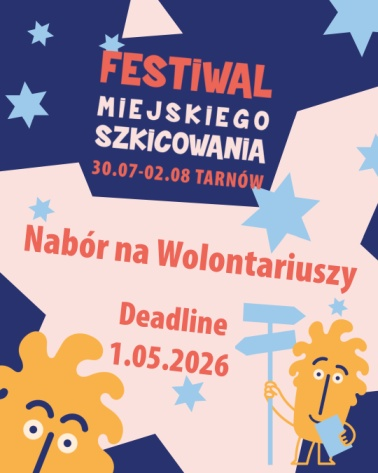
NABÓR NA WOLONTARIUSZY
Chcesz być w samym środku wydarzeń i współtworzyć Festiwal Miejskiego Szkicowania w Tarnowie?
Szukamy wolontariuszy, którzy pomogą nam w przygotowaniach i obsłudze festiwalu.
To nie jest zwykła pomoc przy wydarzeniu. To bycie częścią zespołu, który tworzy przestrzeń do spotkań, wspólnego szkicowania i miejskich historii.
Termin wydarzenia: 30 lipca – 2 sierpnia 2026 (4 dni)
Miejsce: Tarnów
Termin nadsyłania zgłoszeń: 1 maja 2026
Kogo szukamy? Osób otwartych, odpowiedzialnych i gotowych do działania – takich, które:
- lubią pracę z ludźmi,
- są samodzielne,
- interesują się sztuką, rysunkiem, kulturą lub wydarzeniami miejskimi,
- chcą zobaczyć „od kuchni”, jak powstaje festiwal.
Zakres zadań będzie obejmował m.in.:
- pomoc organizacyjną przy warsztatach i pokazach,
- wsparcie uczestników i instruktorów,
- działania w bazie Festiwalu i w przestrzeni miasta, np. punkt informacji,
- pomoc przy wydarzeniach towarzyszących.
Co oferujemy wolontariuszon:
- Bezpłatny bilet na Festiwal Miejskiego Szkicowania
- specjalny Goodie bag dla wolontariuszy (bogatszy niż standardowy)
- Doświadczenie pracy przy ogólnopolskim wydarzeniu kulturalnym
- Certyfikat wolontariatu
Wymagania:
- Obecność podczas festiwalu (kilka osób - dzień przed festiwalem)
- Gotowość do realizacji zadań zgodnie z ustaleniami organizatorów i koordynatora wolontariszy
- Doświadczenie nie jest wymagane
- Znajomość języka angielskiego jest mile widziana, ale niekonieczna
Lista instruktorów, którzy wezmą udział w Festiwalu Miejskiego Szkicowania w Tarnowie (30.07 - 2.08.2026). Kliknij nazwisko danej osoby, aby wyświetlić więcej informacji.
WARSZTATY i POKAZY
- Andrew James
- Uma Kelkar
- Natalia Li
- Julia Majewska
- Adam Michen
- Kateryna Ocheredko
- Iga Oliwiak
- Michael Persch
- Blanka Pisarczyk
- Bartłomiej Pochopień
- Peter Rush
- Tomasz Wełna
- Volha Zarouskaya
PRELEKCJE
KORESPONDENCI
Organizatorzy
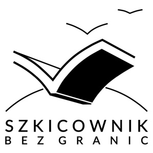
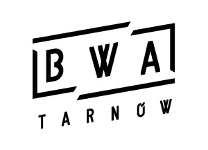
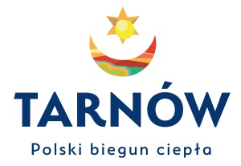
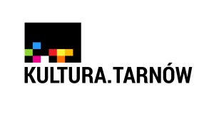
Partnerzy Festiwalu
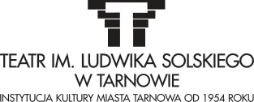
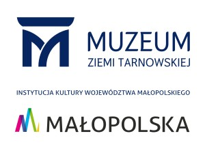
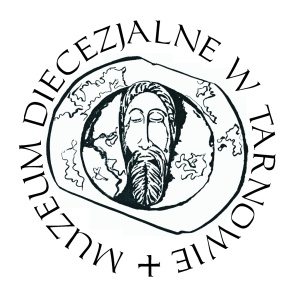
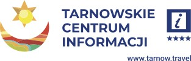
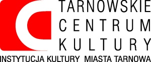
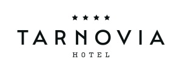
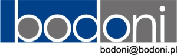
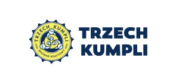
Patroni Festiwalu
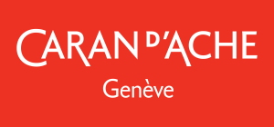
Sponsorzy Festiwalu
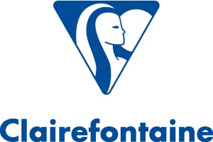
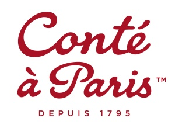
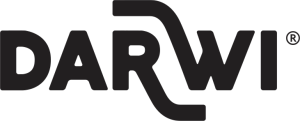
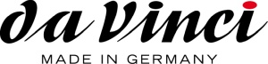
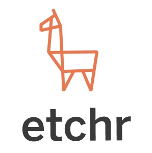
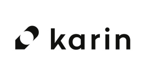
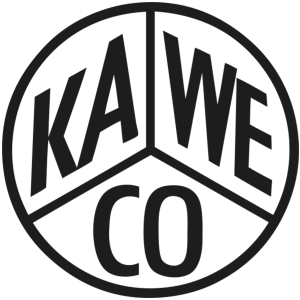
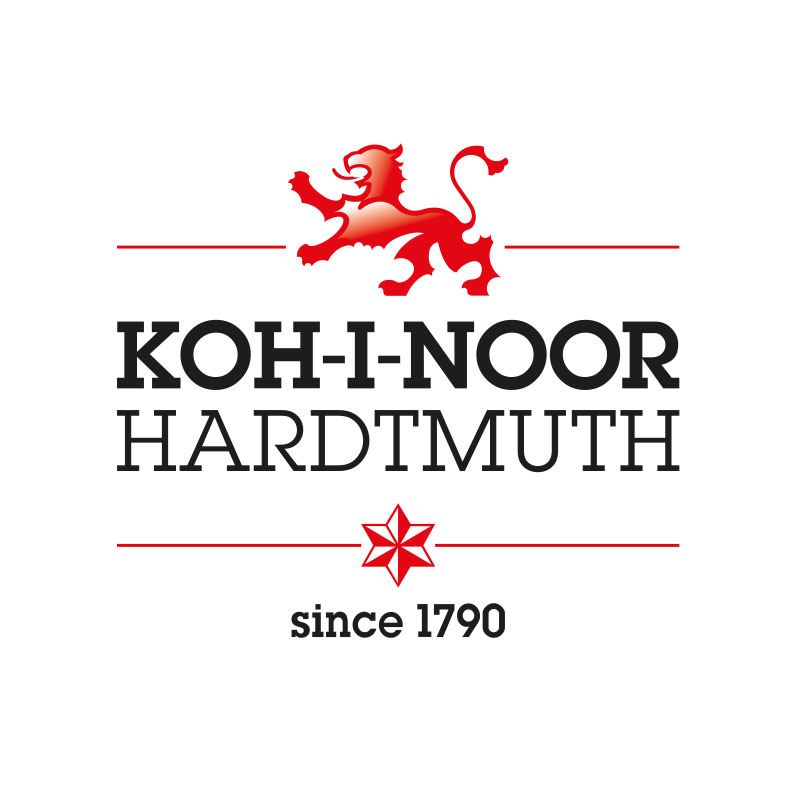
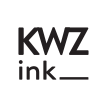
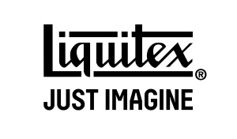
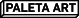
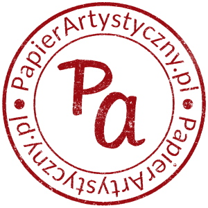
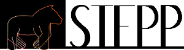
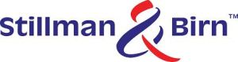
O poprzednich edycjach Festiwalu Miejskiego Szkicowania, które odbyły się w 2022, 2023 i 2024 roku w Świdnicy, przeczytasz w zakładce Blog.
Urban Sketchers Poland
KIM JESTEŚMY? Jesteśmy grupą promującą szkicowanie w przestrzeni miejskiej, zrzeszającą miłośników rysunku na każdym poziomie zaawansowania. Urban Sketchers to oddolna inicjatywa, która jest realizowana na całym świecie, a jej kolebką jest Seattle.
CO ROBIMY? Szkicujemy otaczający nas świat wszelkimi dostępnymi technikami, opierając się na bezpośredniej obserwacji i doświadczeniu bycia w danym miejscu. Publikujemy nasze prace w internecie i wspieramy się w twórczym rozwoju, tworząc jedyną w swoim rodzaju międzynarodową społeczność.
DLA KOGO? Nasze spotkania rysunkowe są dla każdego, niezależnie od wieku, poglądów i umiejętności - wystarczy jedynie lubić rysować (lub malować). Chcemy pokazywać świat widziany naszymi oczami przez każdy kolejny rysunek, który tworzymy.
Manifest, którego przestrzegamy podczas rysowania:
- Rysujemy na miejscu (na zewnątrz lub w budynkach), starając się uchwycić to, co widzimy w wyniku naszej bezpośredniej obserwacji.
- Nasze rysunki opowiadają historię naszego otoczenia, miejsc w których żyjemy i gdzie podróżujemy.
- Nasze rysunki są kroniką konkretnego czasu i miejsca.
- Wiernie oddajemy sceny, których jesteśmy świadkami.
- Korzystamy z wszelkich materiałów i pielęgnujemy nasz indywidualny styl.
- Wspieramy się wzajemnie i rysujemy wspólnie.
- Pokazujemy swoje prace w Internecie.
- Pokazujemy świat, przez każdy kolejny rysunek, który tworzymy.
Informacje o spotkaniach i innych organizowanych przez nas wydarzeniach znajdziecie tutaj.
Urban Sketchers w Polsce
Na poniższej mapie znajdziesz miejsca, w których znajdują się nasi sketcherzy oraz kontakt do nich. Chcesz z nami poszkicować? Napisz do nas!
Sympozjum Urban Sketchers - Poznań 2025
Nasz oddział był gospodarzem Międzynarodowego Sympozjum Urban Sketchers w dniach 20-23 sierpnia 2025 roku w Poznaniu. Po więcej informacji związanych z Sympozjum zapraszamy na stronę www.urbansketchers.org.
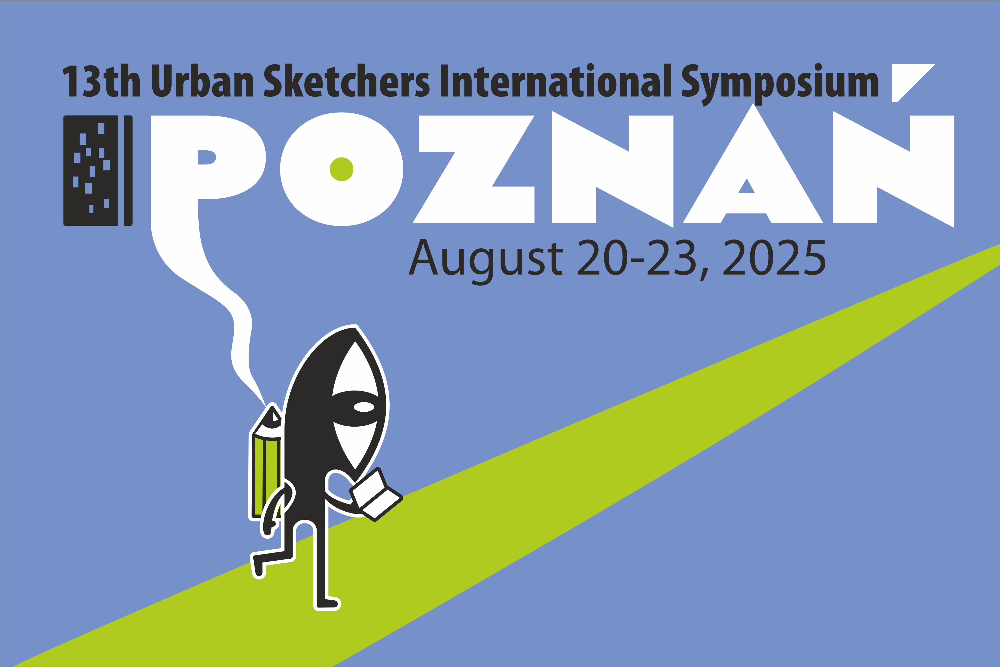
Wspólne zdjęcie z Sympozjum:
 Autor: Piotr Dutkiewicz
Autor: Piotr Dutkiewicz
Galeria zdjęć z Festiwalu Miejskiego Szkicowania w Świdnicy 2024:


Zdjęcia do pobrania znajdują się tutaj. Autor: Daniel Gębala
Magazyn "Szkicownik bez Granic"
Zapraszamy do czytania bezpłatnego magazynu "Szkicownik bez Granic", stworzonego przez sketcherów - dla sketcherów. Sprawdźcie, co ciekawego działo się w Polsce w temacie miejskiego szkicowania. Kolejne numery czasopisma w formacie PDF znajdziecie tutaj - możecie je pobrać za darmo!
Kontakt
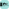
Urban Sketchers Poland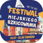
Festiwal Miejskiego Szkicowania - FacebookUrban Sketchers jest organizacją non-profit mającą na celu szerzenie artystycznych, historycznych i edukacyjnych wartości wynikających z rysowania miejskich lokalizacji, promowanie swoich działań oraz łączenie ludzi na całym świecie, którzy rysują na żywo, w terenie (tam gdzie znajduje się to, co rysują) w miejscach, gdzie żyją i podróżują.
Urban Sketchers Poland jest lokalnym oddziałem tej organizacji, a jej celem jest szerzenie powyższych wartości i idei w Polsce.
Więcej informacji: www.urbansketchers.org